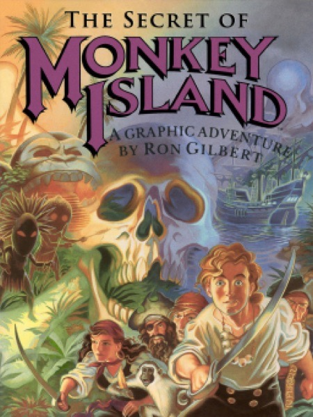

Adventure · 1990
The Secret of Monkey Island
LucasArts comedy where you could not die, get stuck, or stop quoting it.

Cover: Wikipedia: The Secret of Monkey Island
Facts
- Released
- 1990-10-01
- Genre
- Point & Click
- Category
- Adventure
- Platforms
- Nintendo, PC, Retro home computer
- Developers
- Lucasfilm Games
- Publishers
- Lucasfilm Games
PC requirements
- Minimum
- [object Object]